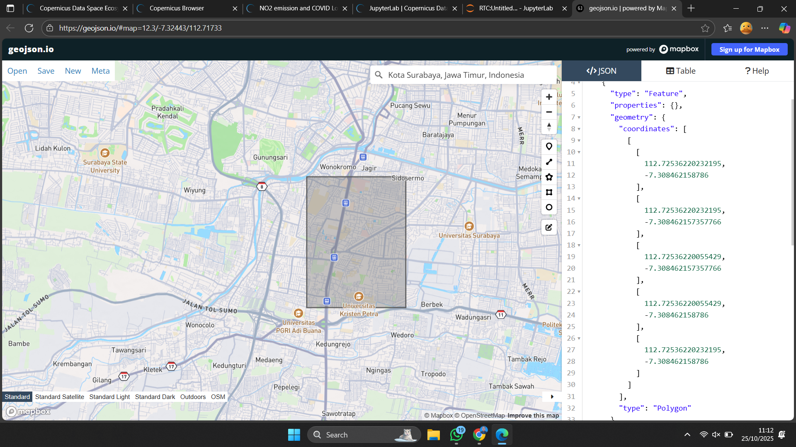
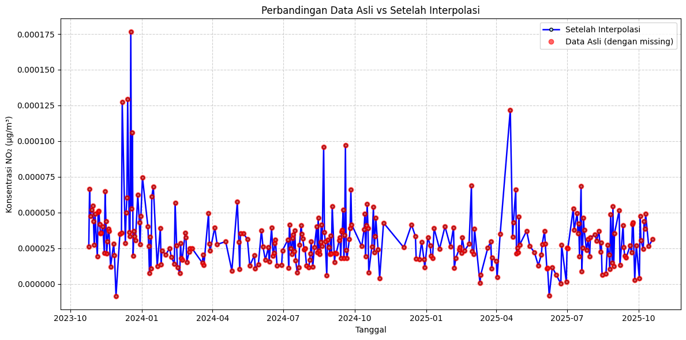
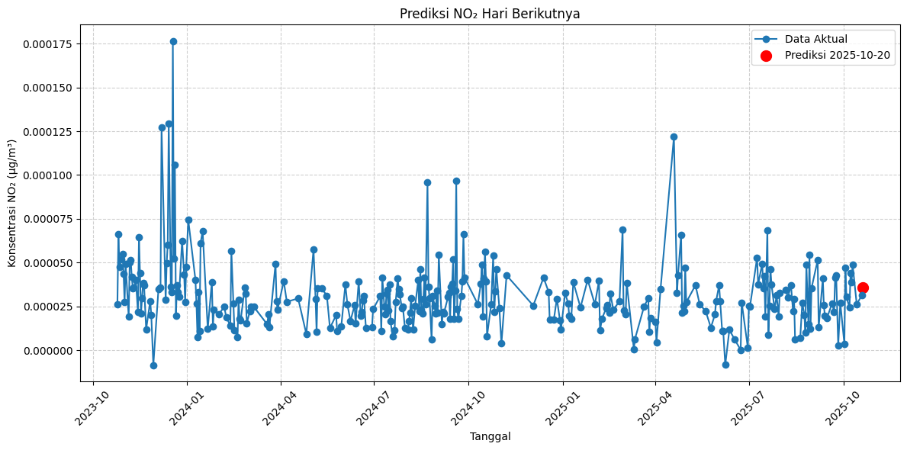

Time Series Forecasting#
from IPython.display import Image, display
display(Image(filename='Data/peta.png'))

Mengambil Data#
!pip install openeo
Collecting openeo
Downloading openeo-0.45.0-py3-none-any.whl.metadata (8.2 kB)
Requirement already satisfied: requests>=2.26.0 in /home/codespace/.local/lib/python3.12/site-packages (from openeo) (2.32.4)
Requirement already satisfied: urllib3>=1.9.0 in /home/codespace/.local/lib/python3.12/site-packages (from openeo) (2.5.0)
Collecting shapely>=1.6.4 (from openeo)
Downloading shapely-2.1.2-cp312-cp312-manylinux2014_x86_64.manylinux_2_17_x86_64.whl.metadata (6.8 kB)
Requirement already satisfied: numpy>=1.17.0 in /home/codespace/.local/lib/python3.12/site-packages (from openeo) (2.3.1)
Collecting xarray<2025.01.2,>=0.12.3 (from openeo)
Downloading xarray-2025.1.1-py3-none-any.whl.metadata (11 kB)
Requirement already satisfied: pandas>0.20.0 in /home/codespace/.local/lib/python3.12/site-packages (from openeo) (2.3.1)
Collecting pystac>=1.5.0 (from openeo)
Downloading pystac-1.14.1-py3-none-any.whl.metadata (4.7 kB)
Collecting deprecated>=1.2.12 (from openeo)
Downloading Deprecated-1.2.18-py2.py3-none-any.whl.metadata (5.7 kB)
Requirement already satisfied: packaging>=23.2 in /home/codespace/.local/lib/python3.12/site-packages (from xarray<2025.01.2,>=0.12.3->openeo) (25.0)
Collecting wrapt<2,>=1.10 (from deprecated>=1.2.12->openeo)
Downloading wrapt-1.17.3-cp312-cp312-manylinux1_x86_64.manylinux_2_28_x86_64.manylinux_2_5_x86_64.whl.metadata (6.4 kB)
Requirement already satisfied: python-dateutil>=2.8.2 in /home/codespace/.local/lib/python3.12/site-packages (from pandas>0.20.0->openeo) (2.9.0.post0)
Requirement already satisfied: pytz>=2020.1 in /home/codespace/.local/lib/python3.12/site-packages (from pandas>0.20.0->openeo) (2025.2)
Requirement already satisfied: tzdata>=2022.7 in /home/codespace/.local/lib/python3.12/site-packages (from pandas>0.20.0->openeo) (2025.2)
Requirement already satisfied: six>=1.5 in /home/codespace/.local/lib/python3.12/site-packages (from python-dateutil>=2.8.2->pandas>0.20.0->openeo) (1.17.0)
Requirement already satisfied: charset_normalizer<4,>=2 in /home/codespace/.local/lib/python3.12/site-packages (from requests>=2.26.0->openeo) (3.4.2)
Requirement already satisfied: idna<4,>=2.5 in /home/codespace/.local/lib/python3.12/site-packages (from requests>=2.26.0->openeo) (3.10)
Requirement already satisfied: certifi>=2017.4.17 in /home/codespace/.local/lib/python3.12/site-packages (from requests>=2.26.0->openeo) (2025.7.9)
Downloading openeo-0.45.0-py3-none-any.whl (335 kB)
Downloading xarray-2025.1.1-py3-none-any.whl (1.2 MB)
━━━━━━━━━━━━━━━━━━━━━━━━━━━━━━━━━━━━━━━━ 1.2/1.2 MB 36.7 MB/s 0:00:00
?25hDownloading Deprecated-1.2.18-py2.py3-none-any.whl (10.0 kB)
Downloading wrapt-1.17.3-cp312-cp312-manylinux1_x86_64.manylinux_2_28_x86_64.manylinux_2_5_x86_64.whl (88 kB)
Downloading pystac-1.14.1-py3-none-any.whl (207 kB)
Downloading shapely-2.1.2-cp312-cp312-manylinux2014_x86_64.manylinux_2_17_x86_64.whl (3.1 MB)
━━━━━━━━━━━━━━━━━━━━━━━━━━━━━━━━━━━━━━━━ 3.1/3.1 MB 60.1 MB/s 0:00:00
?25hInstalling collected packages: wrapt, shapely, pystac, deprecated, xarray, openeo
━━━━━━━━━━━━━━━━━━━━━━━━━━━━━━━━━━━━━━━━ 6/6 [openeo]2m5/6 [openeo]]
Successfully installed deprecated-1.2.18 openeo-0.45.0 pystac-1.14.1 shapely-2.1.2 wrapt-1.17.3 xarray-2025.1.1
[notice] A new release of pip is available: 25.2 -> 25.3
[notice] To update, run: pip install --upgrade pip
# === 1️⃣ Instal library (jalankan sekali saja) ===
# !pip install openeo shapely requests
# === 2️⃣ Import library utama ===
import openeo
from shapely.geometry import shape
# === 3️⃣ Koneksi dan autentikasi ke Copernicus openEO ===
connection = openeo.connect("openeo.dataspace.copernicus.eu").authenticate_oidc()
# === 4️⃣ Definisikan area of interest (AOI) valid di sekitar Surabaya ===
aoi = {
"type": "Polygon",
"coordinates": [
[
[112.72, -7.05],
[112.72, -7.00],
[112.77, -7.00],
[112.77, -7.05],
[112.72, -7.05]
]
],
}
# === 5️⃣ Load koleksi Sentinel-5P (L2 NO2) untuk rentang waktu tertentu ===
# Gunakan rentang singkat dulu untuk uji coba agar tidak overload
prob = connection.load_collection(
"SENTINEL_5P_L2",
temporal_extent=["2023-10-25", "2025-10-25"],
spatial_extent={
"west": 112.72,
"south": -7.05,
"east": 112.77,
"north": -7.00
},
bands=["NO2"]
)
# === 6️⃣ Agregasi temporal harian ===
prob = prob.aggregate_temporal_period(reducer="mean", period="day")
# === 7️⃣ Agregasi spasial berdasarkan AOI ===
feature = {"type": "Feature", "geometry": aoi, "properties": {"id": 1}}
fc = {"type": "FeatureCollection", "features": [feature]}
prob = prob.aggregate_spatial(reducer="mean", geometries=fc)
# === 8️⃣ Eksekusi batch job dan unduh hasil ===
try:
job = prob.execute_batch(
title="NO2 Surabaya 25 Oktober 2023 - 25 Oktober 2025",
outputfile="no2_surabaya.nc" # hasil disimpan di file .nc
)
print("✅ Job selesai sukses:", job.status())
except Exception as e:
print("❌ Terjadi error:", e)
# Jika job gagal, coba ambil log-nya
try:
job_id = str(e).split("'")[1]
job = connection.job(job_id)
print("🔍 Log job:\n", job.logs())
except:
print("Tidak bisa membaca log job secara otomatis.")
Authenticated using refresh token.
0:00:00 Job 'j-25102507010641fdba19eb1cffb44415': send 'start'
0:00:13 Job 'j-25102507010641fdba19eb1cffb44415': created (progress 0%)
0:00:18 Job 'j-25102507010641fdba19eb1cffb44415': created (progress 0%)
0:00:25 Job 'j-25102507010641fdba19eb1cffb44415': created (progress 0%)
0:00:33 Job 'j-25102507010641fdba19eb1cffb44415': created (progress 0%)
0:00:43 Job 'j-25102507010641fdba19eb1cffb44415': created (progress 0%)
0:00:56 Job 'j-25102507010641fdba19eb1cffb44415': created (progress 0%)
0:01:11 Job 'j-25102507010641fdba19eb1cffb44415': running (progress N/A)
0:01:31 Job 'j-25102507010641fdba19eb1cffb44415': running (progress N/A)
0:01:55 Job 'j-25102507010641fdba19eb1cffb44415': running (progress N/A)
0:02:26 Job 'j-25102507010641fdba19eb1cffb44415': running (progress N/A)
0:03:04 Job 'j-25102507010641fdba19eb1cffb44415': running (progress N/A)
0:03:50 Job 'j-25102507010641fdba19eb1cffb44415': running (progress N/A)
0:04:49 Job 'j-25102507010641fdba19eb1cffb44415': running (progress N/A)
0:05:50 Job 'j-25102507010641fdba19eb1cffb44415': finished (progress 100%)
✅ Job selesai sukses: finished
Convert to CSV#
!pip install netCDF4 h5netcdf xarray --upgrade --quiet
[notice] A new release of pip is available: 25.2 -> 25.3
[notice] To update, run: pip install --upgrade pip
import xarray as xr
import pandas as pd
# === Buka file NetCDF hasil openEO ===
ds = xr.open_dataset("/workspaces/PSD/PSD/no2_surabaya.nc", engine="h5netcdf")
# === Lihat struktur dataset ===
print(ds)
# === Konversi ke DataFrame ===
df = ds.to_dataframe().reset_index()
# === Deteksi otomatis kolom waktu dan NO2 ===
kolom_waktu = 't' if 't' in df.columns else 'time'
kolom_no2 = 'NO2' if 'NO2' in df.columns else list(df.filter(like='NO2'))[0]
# === Pilih kolom utama ===
df = df[[kolom_waktu, kolom_no2]]
df.columns = ['Tanggal', 'NO2']
# === Simpan hasil ke CSV ===
output_path = "/workspaces/PSD/PSD/Data/NO2_Surabaya.csv"
df.to_csv(output_path, index=False)
print(f"✅ Data berhasil disimpan ke: {output_path}")
print(df.head())
<xarray.Dataset> Size: 5kB
Dimensions: (feature: 1, t: 301)
Coordinates:
* t (t) datetime64[ns] 2kB 2023-10-25 2023-10-26 ... 2025-10-19
lat (feature) float64 8B ...
lon (feature) float64 8B ...
feature_names (feature) int64 8B ...
Dimensions without coordinates: feature
Data variables:
NO2 (feature, t) float64 2kB ...
Attributes:
Conventions: CF-1.8
source: Aggregated timeseries generated by openEO GeoPySpark backend.
✅ Data berhasil disimpan ke: /workspaces/PSD/PSD/Data/NO2_Surabaya.csv
Tanggal NO2
0 2023-10-25 0.000026
1 2023-10-26 0.000066
2 2023-10-27 0.000048
3 2023-10-29 0.000052
4 2023-10-30 0.000055
Exploratory Data Analysis (EDA)#
import numpy as np
import pandas as pd
import matplotlib.pyplot as plt
from sklearn.preprocessing import MinMaxScaler
from sklearn.model_selection import train_test_split
from sklearn.neighbors import KNeighborsRegressor
from sklearn.metrics import mean_squared_error, r2_score
no2_asli = pd.read_csv("/workspaces/PSD/PSD/Data/NO2_Surabaya.csv")
no2_asli.info()
<class 'pandas.core.frame.DataFrame'>
RangeIndex: 301 entries, 0 to 300
Data columns (total 2 columns):
# Column Non-Null Count Dtype
--- ------ -------------- -----
0 Tanggal 301 non-null object
1 NO2 301 non-null float64
dtypes: float64(1), object(1)
memory usage: 4.8+ KB
# Ubah kolom 'Tanggal' menjadi tipe Tanggaltime
no2_asli['Tanggal'] = pd.to_datetime(no2_asli['Tanggal'])
no2_asli.info()
no2 = no2_asli.copy()
# Urutkan data berdasarkan tanggal
no2 = no2.sort_values('Tanggal')
# Set kolom 'Tanggal' sebagai index
no2 = no2.set_index('Tanggal')
print(no2.head(5))
<class 'pandas.core.frame.DataFrame'>
RangeIndex: 301 entries, 0 to 300
Data columns (total 2 columns):
# Column Non-Null Count Dtype
--- ------ -------------- -----
0 Tanggal 301 non-null datetime64[ns]
1 NO2 301 non-null float64
dtypes: datetime64[ns](1), float64(1)
memory usage: 4.8 KB
NO2
Tanggal
2023-10-25 0.000026
2023-10-26 0.000066
2023-10-27 0.000048
2023-10-29 0.000052
2023-10-30 0.000055
# MEMERIKSA MISSING DATES
# Cek rentang tanggal lengkap (harian)
tanggal_lengkap = pd.date_range(start=no2.index.min(), end=no2.index.max(), freq='D')
print(tanggal_lengkap)
# Cari tanggal yang hilang
tanggal_hilang = tanggal_lengkap.difference(no2.index)
print("Tanggal yang hilang:\n", tanggal_hilang)
DatetimeIndex(['2023-10-25', '2023-10-26', '2023-10-27', '2023-10-28',
'2023-10-29', '2023-10-30', '2023-10-31', '2023-11-01',
'2023-11-02', '2023-11-03',
...
'2025-10-10', '2025-10-11', '2025-10-12', '2025-10-13',
'2025-10-14', '2025-10-15', '2025-10-16', '2025-10-17',
'2025-10-18', '2025-10-19'],
dtype='datetime64[ns]', length=726, freq='D')
Tanggal yang hilang:
DatetimeIndex(['2023-10-28', '2023-11-03', '2023-11-04', '2023-11-11',
'2023-11-13', '2023-11-21', '2023-11-23', '2023-11-24',
'2023-11-25', '2023-11-28',
...
'2025-10-01', '2025-10-05', '2025-10-06', '2025-10-11',
'2025-10-12', '2025-10-13', '2025-10-15', '2025-10-16',
'2025-10-17', '2025-10-18'],
dtype='datetime64[ns]', length=425, freq=None)
Pre-Processing#
Menangani Missing Value#
# Reindex dataframe agar semua tanggal muncul
no2 = no2.reindex(tanggal_lengkap)
print(no2.head(10))
# Interpolasi nilai yang hilang (linear interpolation)
no2 = no2.interpolate(method='linear')
# Reset index dan ubah nama kolom index ke 'date' kembali
no2 = no2.reset_index().rename(columns={'index': 'Tanggal'})
# Cek hasil
# print(no2.head())
print("\nJumlah missing value setelah interpolasi:")
print(no2.isna().sum())
NO2
2023-10-25 0.000026
2023-10-26 0.000066
2023-10-27 0.000048
2023-10-28 NaN
2023-10-29 0.000052
2023-10-30 0.000055
2023-10-31 0.000044
2023-11-01 0.000027
2023-11-02 0.000049
2023-11-03 NaN
Jumlah missing value setelah interpolasi:
Tanggal 0
NO2 0
dtype: int64
# Reindex dataframe agar semua tanggal muncul
no2 = no2.reindex(tanggal_lengkap)
print(no2.head(10))
# Interpolasi nilai yang hilang (linear interpolation)
no2 = no2.interpolate(method='linear')
# Reset index dan ubah nama kolom index ke 'date' kembali
no2 = no2.reset_index().rename(columns={'index': 'Tanggal'})
# Cek hasil
# print(no2.head())
print("\nJumlah missing value setelah interpolasi:")
print(no2.isna().sum())
Tanggal NO2
2023-10-25 NaT NaN
2023-10-26 NaT NaN
2023-10-27 NaT NaN
2023-10-28 NaT NaN
2023-10-29 NaT NaN
2023-10-30 NaT NaN
2023-10-31 NaT NaN
2023-11-01 NaT NaN
2023-11-02 NaT NaN
2023-11-03 NaT NaN
Jumlah missing value setelah interpolasi:
Tanggal 0
Tanggal 726
NO2 726
dtype: int64
import matplotlib.pyplot as plt
import pandas as pd
# pastikan format tanggal dan urutkan
no2['Tanggal'] = pd.to_datetime(no2['Tanggal'])
no2_asli['Tanggal'] = pd.to_datetime(no2_asli['Tanggal'])
no2 = no2.sort_values('Tanggal')
no2_asli = no2_asli.sort_values('Tanggal')
plt.figure(figsize=(12, 6))
# Garis interpolasi (biru dengan garis abu-abu)
plt.plot(
no2['Tanggal'],
no2['NO2'],
color='blue',
linewidth=1.8,
marker='o',
markersize=4,
markeredgecolor='black',
markerfacecolor='lightblue',
label='Setelah Interpolasi'
)
# Titik data asli (merah tanpa garis)
plt.plot(
no2_asli['Tanggal'],
no2_asli['NO2'],
'ro',
alpha=0.6,
label='Data Asli (dengan missing)'
)
plt.title('Perbandingan Data Asli vs Setelah Interpolasi')
plt.xlabel('Tanggal')
plt.ylabel('Konsentrasi NO₂ (µg/m³)')
plt.legend()
plt.grid(True, linestyle='--', alpha=0.6)
plt.tight_layout()
plt.show()

Mengubah Data menjadi Supervised#
import pandas as pd
# === 1️⃣ Baca data NO₂ ===
no2 = pd.read_csv("/workspaces/PSD/PSD/Data/NO2_Surabaya.csv")
print(no2.head())
print(no2.columns)
# Pastikan kolom NO2 ada
kolom_no2 = 'NO2' if 'NO2' in no2.columns else list(no2.filter(like='NO2'))[0]
# === 2️⃣ Ubah ke data supervised ===
supervised = pd.DataFrame()
supervised['t-4'] = no2[kolom_no2].shift(4)
supervised['t-3'] = no2[kolom_no2].shift(3)
supervised['t-2'] = no2[kolom_no2].shift(2)
supervised['t-1'] = no2[kolom_no2].shift(1)
supervised['t'] = no2[kolom_no2]
# === 3️⃣ Hapus nilai NaN hasil shift ===
supervised = supervised.dropna().reset_index(drop=True)
# === 4️⃣ Cek hasil ===
print("Jumlah data supervised:", len(supervised))
print(supervised.head(10))
Tanggal NO2
0 2023-10-25 0.000026
1 2023-10-26 0.000066
2 2023-10-27 0.000048
3 2023-10-29 0.000052
4 2023-10-30 0.000055
Index(['Tanggal', 'NO2'], dtype='object')
Jumlah data supervised: 297
t-4 t-3 t-2 t-1 t
0 0.000026 0.000066 0.000048 0.000052 0.000055
1 0.000066 0.000048 0.000052 0.000055 0.000044
2 0.000048 0.000052 0.000055 0.000044 0.000027
3 0.000052 0.000055 0.000044 0.000027 0.000049
4 0.000055 0.000044 0.000027 0.000049 0.000019
5 0.000044 0.000027 0.000049 0.000019 0.000050
6 0.000027 0.000049 0.000019 0.000050 0.000051
7 0.000049 0.000019 0.000050 0.000051 0.000042
8 0.000019 0.000050 0.000051 0.000042 0.000036
9 0.000050 0.000051 0.000042 0.000036 0.000036
Normalisasi Data#
scaler = MinMaxScaler(feature_range=(0, 1))
scaled_values = scaler.fit_transform(supervised)
scaled = pd.DataFrame(scaled_values, columns=supervised.columns)
print(scaled.head())
t-4 t-3 t-2 t-1 t
0 0.187869 0.404131 0.303341 0.327589 0.342970
1 0.404131 0.303341 0.327589 0.342970 0.283016
2 0.303341 0.327589 0.342970 0.283016 0.194044
3 0.327589 0.342970 0.283016 0.194044 0.312344
4 0.342970 0.283016 0.194044 0.312344 0.149180
Modeling#
X = scaled.drop('t', axis=1)
y = scaled['t']
X_train, X_test, y_train, y_test = train_test_split(X, y, test_size=0.3, random_state=42, shuffle=False)
knn = KNeighborsRegressor(n_neighbors=7)
knn.fit(X_train, y_train)
y_pred = knn.predict(X_test)
mse = mean_squared_error(y_test, y_pred)
r2 = r2_score(y_test, y_pred)
print(f'Mean Squared Error: {mse:.4f}')
print(f'R^2 Score: {r2:.4f}')
Mean Squared Error: 0.0098
R^2 Score: -0.0327
result = pd.DataFrame({
'Actual': y_test,
'Predicted': y_pred
}).reset_index(drop=True)
print("\nContoh hasil prediksi:")
print(result.head())
Contoh hasil prediksi:
Actual Predicted
0 0.169176 0.217361
1 0.158223 0.160513
2 0.254566 0.215780
3 0.049314 0.261727
4 0.080434 0.187234
last_input = scaled.drop('t', axis=1).iloc[-1].values.reshape(1, -1)
next_pred_scaled = knn.predict(last_input)
next_pred = scaler.inverse_transform(
np.hstack((last_input, next_pred_scaled.reshape(-1, 1)))
)[0, -1]
# Buat tanggal baru untuk prediksi
next_date = (pd.to_datetime(no2['Tanggal'].iloc[-1]) + pd.Timedelta(days=1)).date()
print(f'\nPrediksi NO2 pada {next_date}: {next_pred}')
Prediksi NO2 pada 2025-10-20: 3.5975426726508886e-05
/home/codespace/.local/lib/python3.12/site-packages/sklearn/utils/validation.py:2749: UserWarning: X does not have valid feature names, but KNeighborsRegressor was fitted with feature names
warnings.warn(
import matplotlib.pyplot as plt
import pandas as pd
# === Pastikan tipe waktu konsisten ===
# ubah kolom tanggal menjadi datetime64 agar sumbu X bisa dibaca
no2['Tanggal'] = pd.to_datetime(no2['Tanggal'])
# ubah next_date (prediksi hari berikutnya) ke Timestamp juga
next_date = pd.to_datetime(next_date)
# === Plot data aktual + prediksi ===
plt.figure(figsize=(12, 6))
plt.plot(no2['Tanggal'], no2['NO2'], marker='o', label='Data Aktual')
# pastikan next_pred berupa angka tunggal (bukan list)
plt.scatter([next_date], [float(next_pred)], color='red', s=100,
label=f'Prediksi {next_date.strftime("%Y-%m-%d")}')
plt.title('Prediksi NO₂ Hari Berikutnya')
plt.xlabel('Tanggal')
plt.ylabel('Konsentrasi NO₂ (µg/m³)')
plt.xticks(rotation=45)
plt.legend()
plt.grid(True, linestyle='--', alpha=0.6)
plt.tight_layout()
plt.show()
